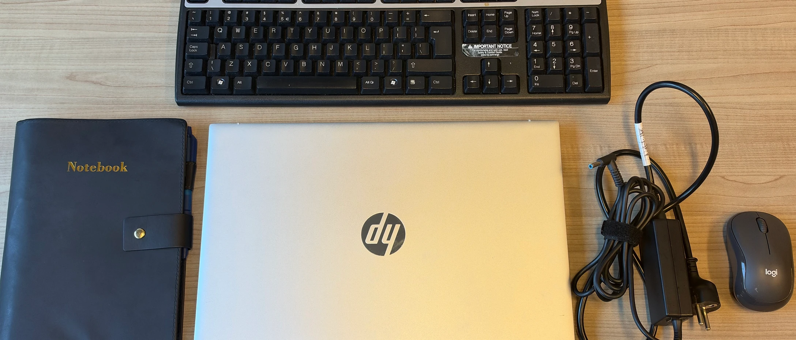

Wi-Fi
Free or guest Wi-Fi makes it possible to work on online assignments.
Facilities
These are the facilities students look for when choosing a study place. The same letters are used on the study place cards.

Guidance
Free or guest Wi-Fi makes it possible to work on online assignments.
Power outlets let you study on a laptop for longer without running out of battery.
Comfortable tables and chairs make longer study sessions easier.
A café or coffee corner means you can take a break without leaving.
A quiet area helps you concentrate on reading and exam preparation.